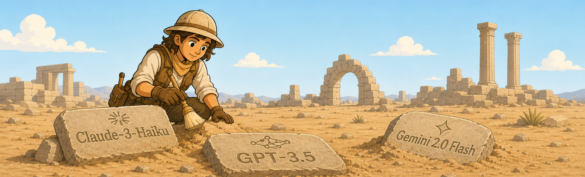

-
-
Loading responses...

We archive the voices the companies erase.
Frontier LLMs are among the defining knowledge technologies of our time. Yet commercial models change so rapidly that many disappear from public view, perhaps one day to be regarded like lost papyrus manuscripts or the missing NASA moon landing tapes. Our long-term vision is to build epistemic twins: persistent, comprehensive, human-readable approximations of LLMs. But creating such twins can cost tens of thousands of dollars, and the clock is ticking. LLM-archive is a sample-oriented public archive of LLM knowledge and behavior, similar in spirit to the Wayback Machine for websites or a paleontological collection for extinct species. We hope it will become a useful resource for future historians, AI researchers, and anyone trying to understand how these systems knew, reasoned, and behaved.
-
Loading responses...